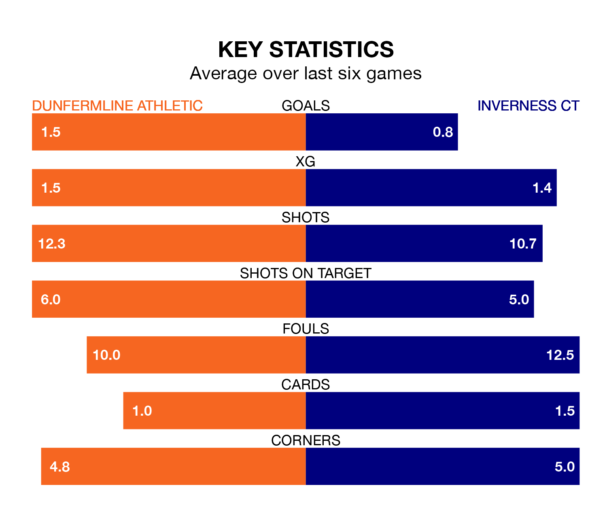

Inverness CT travel to Dunfermline Athletic on Saturday in the Championship.
The visitors come into the game on the back of a defeat in their last match, having lost to Raith Rovers 1-0 at home.
Dunfermline, meanwhile, drew their last match, 0-0 against Queen's Park.
In the last 10 years, Dunfermline and Inverness CT have played each other on 23 occasions. Dunfermline won six of them, Inverness CT nine, and they drew eight times.
On average, Dunfermline scored 1.0 goals and ICT 1.3 in those matches.
Their last meeting was on February 27, when they played out a 0-0 draw.
Inverness CT are eighth in the table after 34 games, of which they have won nine and drawn 11, earning 38 points.
Dunfermline are two places ahead of ICT in sixth, with 11 wins and 10 draws putting them on 43 points.
With 37 goals in 34 games so far this season, the visitors are the league's second-lowest scorers with 1.1 goals per game. But they are conceding fewer than average too, letting in 38 goals at a rate of 1.1 per game.
Athletic are also below average scorers, with 1.1 goals per game, compared to a league average of 1.4. They have conceded 1.3 goals per game.
Inverness CT's Cameron Harper is among the league's most creative players, racking up nine assists in 34 appearances so far this season, and holding third spot in the Championship's assist charts.
For the home team, Joshua Edwards has set up the most goals, having laid on seven assists in 34 games.
Dunfermline are in reasonable form in the Championship, with three wins and two draws from their last six games.
With two wins and a draw over that period, Inverness CT's form is worse – they have taken seven points from 18, compared to Dunfermline's 11.
Updated: 07:59 (UTC), 26/04/24